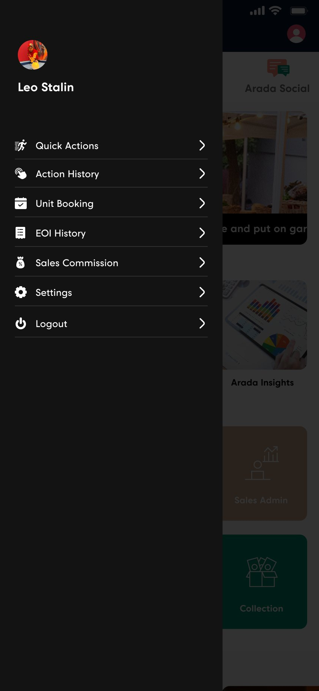
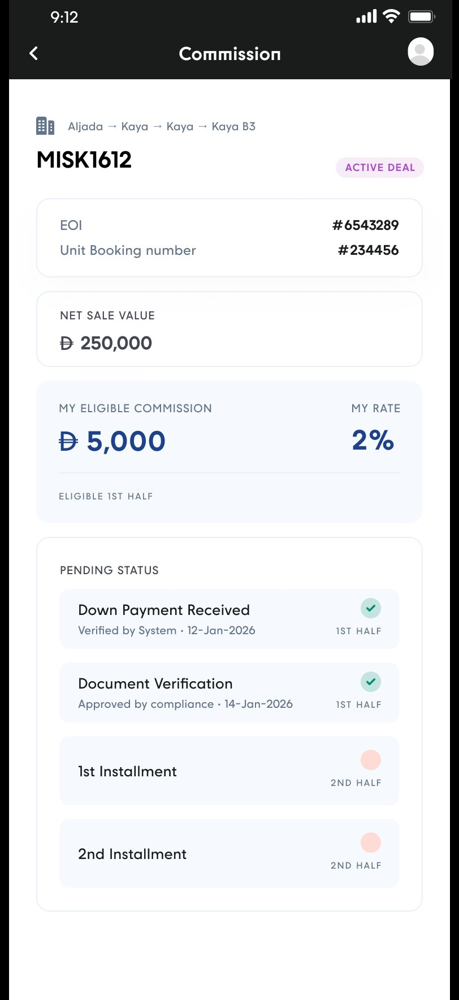
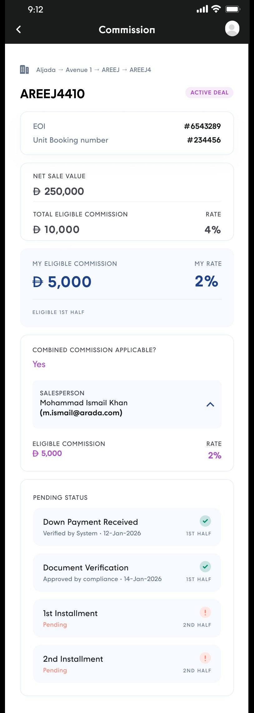
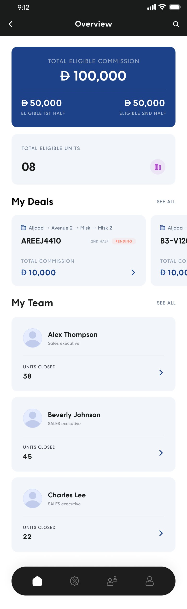
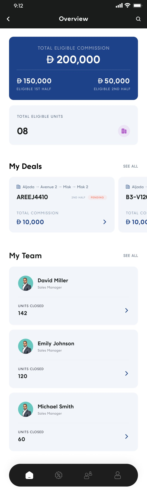
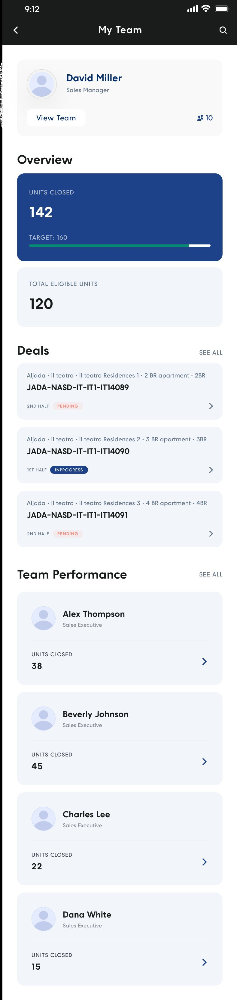
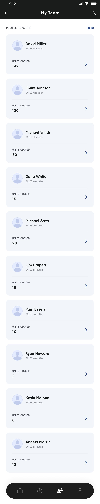
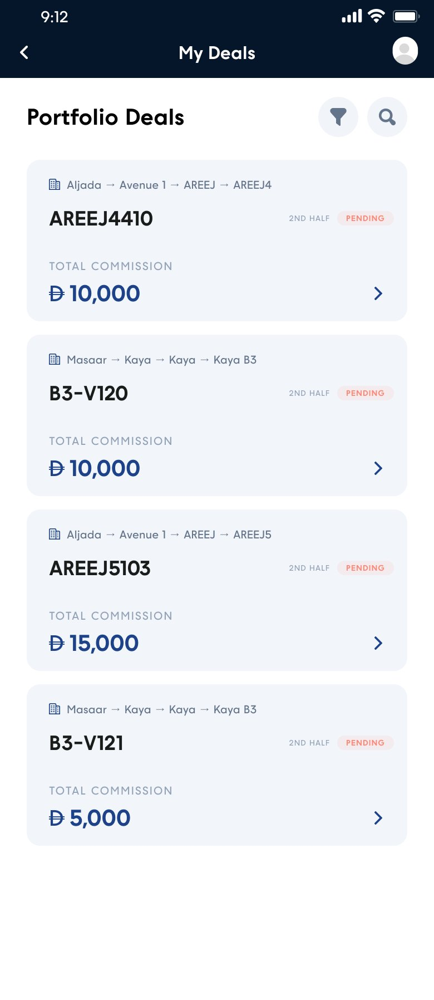
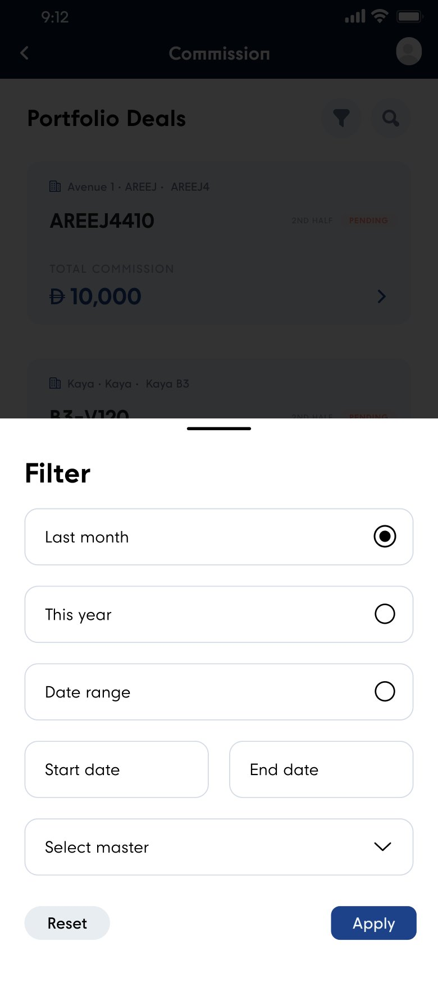
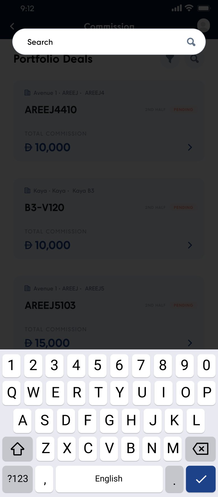

Context
A module, not a product
Connect App is Arada's internal app for its sales organisation. Sales Commission is one item in its drawer — which makes this a different design problem from the two apps beside it in this portfolio.

You inherit the shell, so the only thing you control is the thinking
A standalone app lets you set the navigation, the type scale and the tone. A module gets none of that. Sales Commission opens from a drawer that already contains Quick Actions, Action History, Unit Booking and EOI History, and it has to feel like it belongs to them.
That's a constraint, but it's also the opportunity. The module's deal screen carries the EOI number and the Unit Booking number at the very top — the same records that live in the two drawer items above it. A commission isn't presented as an isolated figure; it's presented as the financial consequence of a booking the user can already look up.
Before the module
Paperwork, email, and somebody else's arithmetic
This account of the previous process comes from the team, not from the designs.
What the process involved
- Paperwork and email to manage commission information.
- Details were hard to keep organised and hard to get at.
- Manual calculation, with the errors, confusion and discrepancies that invites.
- Limited visibility into the status and detail of a commission.
- Back-and-forth between teams just to clarify what a number meant.
- Time-consuming for a salesperson who simply wanted to check what they were owed.
Money is the part of a sales job people check most often and trust least. A commission that arrives without a visible derivation invites exactly one response — is that right? — and that question is what generates the email.
So the design problem was never "display a number". It was: show the calculation, show its current state, and show who verified it. Get those three right and most of the back-and-forth has nothing left to ask.
The domain makes that harder than it sounds. A commission at Arada is split into halves released at different milestones, it may be shared between salespeople at different rates, and it hangs off a deal that itself moves through payment and compliance stages. Every one of those is a place a manual process loses the thread.
There are no before screenshots here. The previous process was documents, spreadsheets and inboxes, so it's described in words — the designs speak for the after.
Goals
What the module had to achieve
Deep dive — 01. The breakdown
Four figures, in the order you'd check them
The deal screen is the centre of the module. Its job is to be checkable — to let a salesperson satisfy themselves that the number is right without asking anyone.
A chain you can follow from sale price to your own share
The card stack reads as a derivation, top to bottom:
- Net sale value — what the unit actually sold for.
- Total eligible commission, with the rate beside it — the pool, and the percentage that produced it.
- My eligible commission, with my rate — the same structure one level down, in a tinted card so it reads as the answer.
- Which half this figure belongs to.
Showing the rate next to every amount is the whole trick. A number on its own can only be believed or disbelieved; a number with its rate can be checked. That single editorial decision is what turns a statement into evidence.
The solo variant proves the rule
When a deal isn't shared, two things disappear: the total-eligible-commission row, and the combined-commission card entirely.
The reasoning is that on a solo deal, "total" and "mine" are the same number — so showing both would be a comparison that answers nothing, and would quietly imply a share exists somewhere. The screen keeps net sale value and your own figure, and drops the rest.
Subtraction over disabling is a pattern that recurs across this work: the Broker App removes its completion card once a profile is approved rather than freezing it at 100%. A screen that shows only what applies is easier to trust than one that shows everything and greys the rest.

Halves, everywhere. The overview card splits the total into eligible 1st half and eligible 2nd half; every deal card in every list carries a half indicator; every row of the status checklist is tagged with the half it releases. The domain's most confusing feature is made structural rather than explained in a footnote — once you've seen the overview card, the tag on every subsequent row needs no caption.
Deep dive — 02. The commission journey
Who verified it, and when
The section that does the most work against the original problem — because "limited visibility" and "back-and-forth to clarify" are the same complaint asked from two directions.
A commission isn't paid on a date. It's released by milestones.
The Pending Status checklist lists them in order, and each row carries four things: what the milestone is, whether it's done, who confirmed it, and when.
- Down Payment Received — Verified by System, with a date · releases the 1st half
- Document Verification — Approved by compliance, with a date · releases the 1st half
- 1st Installment — still pending · 2nd half
- 2nd Installment — still pending · 2nd half
Completed rows take a green tick and a tinted background; pending rows take a soft coral dot and stay plain. You can read the state of a payout from across a room.
But the attribution line is the part I'd defend hardest. "Approved by compliance · 14-Jan-2026" is an answer to a question the user hasn't had to ask yet. Under the old process, finding that out meant an email to someone who then had to look it up. Here it's already on the screen, which is the difference between a status display and an audit trail.

Deep dive — 04. Three scopes
The same instrument, pointed at more people
Executive, Manager and VP see a familiar screen holding a widening population — with one addition that only managers need.


Managers and VPs still earn
Both management views keep My Deals above My Team. That ordering is a small piece of respect: a manager at Arada is a salesperson who also runs people, and putting the team block first would have implied their own pipeline was the secondary concern.
The addition for managers is a floating tab bar — home, commission, team, profile — that executives don't get. An executive has one scope and doesn't need to switch between them; a manager moves between their own numbers and their team's constantly.
Targets appear only where they're actionable
Drilling into a manager reveals something absent everywhere else: units closed against a target, with a progress bar. It's on the person-detail screen and nowhere else.
A target on your own overview is pressure you can't act on in a commission module. A target on someone you manage is context for a conversation you're about to have.


A manager opening one of their executives sees that person's own commission overview — the identical navy card, filled with someone else's figures. It's the clearest possible statement of the module's model: there is one view of a commission, and your role decides whose you're allowed to look at. The zero state is handled the same way, showing a card of zeroes rather than hiding it — an executive with nothing eligible yet is a fact, not an empty screen.
Deep dive — 05. Finding one deal
A portfolio only ever gets longer
"Faster access to information" is a phrase that only becomes real when someone with sixty closed units wants the one from last March.



The applied filter is a chip you can remove
Once a filter is applied it appears as a chip above the list, with its own × . The list is shorter, and the reason is stated on the same screen.
The alternative — a filter that quietly hides results with its state locked inside a sheet — produces the single most common confusion in list interfaces: where did my deals go? A chip costs one row of vertical space and removes that question entirely.
Filter by period or by community, because that's how people remember
The filter offers last month, this year, a custom range, and a master community selector. Those aren't arbitrary — they're the two ways a salesperson actually recalls a deal: roughly when it closed, or which community it was in.
Search covers the third way, when they remember the unit code itself. Three retrieval routes for three kinds of memory, and no dependency on remembering a commission reference number.
Challenges
Where the design had to work harder
Five problems layout alone couldn't solve.
Outcomes
What's evidenced, and what's expected
Worth separating clearly: some of these are mechanisms visible in the designs, and some are benefits the team anticipates but which nothing here measures.
Evidenced in the design
Each of these points at a specific screen in this case study.
The calculation is on the screen
Net sale value, total eligible commission with its rate, and the user's own share with their own rate. The derivation is published rather than asserted, so a salesperson can satisfy themselves without contacting anyone.
Status carries an audit trail
Each milestone shows whether it's complete, who confirmed it — System, compliance — and on what date. "Where is my commission?" and "who approved this?" are both answered before being asked.
Splits are explicit and attributable
Shared deals name every participant with their rate and email, and one consistent colour marks shared money from the individual deal all the way up to the yearly breakdown.
It's centralised inside the tool people already use
A drawer item in Connect App, carrying the EOI and unit booking references so the commission connects to the records it derives from instead of standing alone.
A specific deal is retrievable three ways
By period, by master community, or by unit code — with the applied filter shown as a removable chip so a shortened list always explains itself.
Anticipated, but not measured
The team expects the module to reduce reliance on paperwork and email, cut the back-and-forth needed to clarify a figure, lower the incidence of manual calculation errors, and make checking a commission faster than it was.
Those are reasonable expectations, and they follow logically from the mechanisms above — but they are expectations, not findings. I have no before-and-after data on query volumes, error rates or time-to-answer, and I'm not going to present the design's intent as if it were a measured result.
What would actually prove it
- Commission-related queries reaching finance, before and after.
- Corrections and disputes raised per hundred deals.
- Time from a salesperson's question to an answer they accept.
- Module usage around payout dates versus the rest of the month.
All four are obtainable. None sit with me, and until they do this section stays honest about the difference.
Where this goes next
A payout date, or an estimate of one
The module answers what you're owed and which milestones remain. The question it stops just short of is when. Even a projected date against the next outstanding milestone would close the last gap between transparency and reassurance — and the milestone data needed to derive it is already on the screen.
Notify, don't wait to be visited
Everything here is pull: the user has to open the module to learn that compliance approved their documents. A push when a milestone clears would turn the most valuable moment in the whole flow — your first half has been released — from something discovered into something delivered.
Screens
The full set
Every screen referenced above, plus the variants that didn't get their own section. Tap any to open it full size.
Next case study
Lead Management App
Upstream of the commission: the app that decides who owns a lead, with a countdown on every one of them.